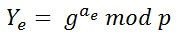
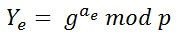

The polynomial has the degree t - 1.

The commitments for checking the shares later.
There are the natural numbers n and t . In a (n,t) Secret Sharing protocol the secret is distributed to n persons. Each person receives a part of the secret. If at least t of these persons come together, they are able to retrieve the secret.
If they are less than t they are'nt able to get any relevant Information about the secret.
This concept can be compared to a treasure map which is split into pieces. Only if all the pieces come together, the secret can be revealed.
The problem of this idea is, that every participant has the possibility to make changes with his part without giving the other ones
a chance to recognize it. Such a circumstance could change the whole meaning of the map. Therefore it is essential to avoid this.
The Verifiable Secret Sharing algorithm extends the Shamir's Secret Sharing algorithm by this function.
The algorithm from Shamir is based on the Lagrange polynomial interpolation and is a (n,t)-secret sharing protocol. All calculations are done within a finite field.
The dealer wants to share a secret s ∈ ℕ.
The polynomial has the degree t - 1.

The commitments for checking the shares later.
Before the reconstruction, the check of the shares is done. This happens in 2 Steps.
Step 1:

Step 2:

If the results of this calculation is equal, the checked share is correct. This calculation has to be done for each share seperately.
For reconstructing the secret, we assume that t shareholder work together. Their shares are Ni = P(i),(1 ≤ i ≤ t).P(x) is the polynomial.
This algorithm is used by the shareholders to reconstruct the secret.